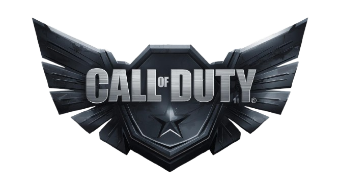
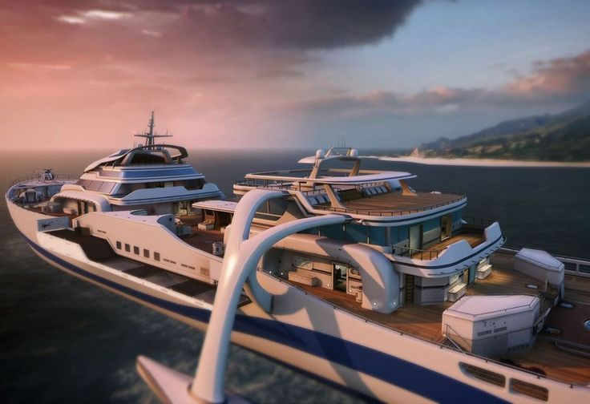
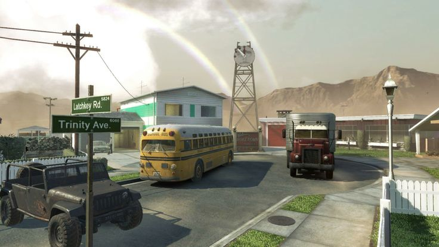
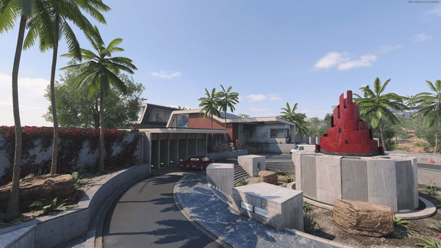
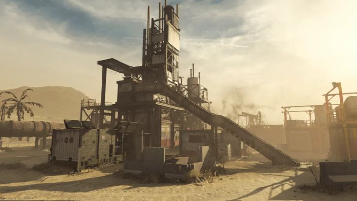
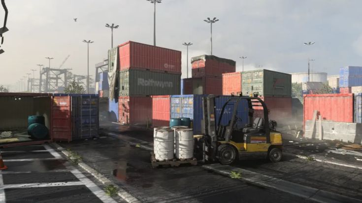
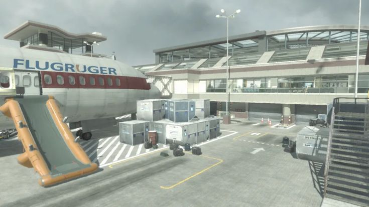

← →Conheça os mapas mais icônicos da franquia Call of Duty.

Um mapa ambientado em um iate de luxo no meio do oceano, Hijacked é conhecido por seu combate rápido e extremamente próximo. Com corredores apertados e áreas centrais sempre disputadas, ele favorece ações intensas e constantes trocas de tiro, sem muito espaço para erro.

Um dos mapas mais icônicos da franquia, Nuketown é conhecido pelo combate extremamente rápido e caótico em um espaço pequeno. Inspirado em um bairro suburbano de testes nucleares, ele força confrontos constantes e reflexos rápidos, sendo perfeito para partidas intensas e sem pausa.

Localizado em uma mansão luxuosa em Hollywood, Raid é um dos mapas mais equilibrados da franquia. Com áreas abertas, corredores internos e rotas laterais bem distribuídas, ele permite diferentes estilos de jogo, desde estratégias mais táticas até combates agressivos e diretos.

Localizado em uma plataforma no deserto, Rust é um mapa vertical e compacto que favorece duelos rápidos e movimentação constante. Ficou muito conhecido por ser palco de 1v1s e jogadas decisivas.

Um dos menores mapas de Call of Duty, Shipment é pura correria. Com containers espalhados e praticamente sem espaço para respirar, o mapa é famoso pelo caos absoluto, onde os jogadores aparecem e já entram em combate imediatamente.

Ambientado em um aeroporto, Terminal mistura áreas internas e externas, criando um equilíbrio entre combate aberto e fechado. É um dos mapas mais lembrados da série por sua ambientação detalhada e jogabilidade versátil.